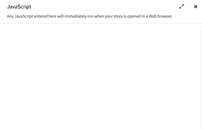
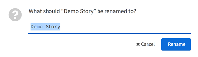

Using the Editor: Passages View

At the bottom of the Passages View is a menu with access to different functionality.
Return to Story Listing

Return to the Story List.
Story Menu

The Story Menu gives access to different functionality about the story itself.
Edit Story JavaScript

The Edit Story JavaScript screen allows for adding or changing JavaScript code that will be included in the story when run or published in a HTML file.
Edit Story Stylesheet

The Edit Story Stylesheet screen allows for adding or changing CSS rules that will be included in the story when run or published in a HTML file.
Change Story Format

The Story Format screens allows for changing the story format in use when running and publishing the story in HTML.
Rename Story

The Rename Story option allows for changing the name of the story.
Select All Passages
The Select All Passages places all passages into a single selection for moving or rearranging them as a group
Snap to Grid
The Snap to Grid option turns off or on if passages should move to the closest grid position when moved.
Story Statistics

The Story Statistics screen shows data on the story including the number of characters and words.
View Proofing Copy

The View Proofing Copy of a story is the text of all passages except for the Story JavaScript and Story Stylesheet.
Publish to File
The Publish to File option compiles the current story and any Story JavaScript and Story Stylesheet code into a single HTML file.
Quick Find

The Quick Find functionality is used for searching for words or longer phrases across all passages.
Find and Replace

The Find and Replace functionality search for words, phrases, or certain expresses for the purpose of replacing them, if found, with other words or longer phrases.
Story Structure

The Story Structure view shows the connection between passages only.
Passage Titles

The Passage Tiles view shows simply that: passage titles.
Titles and Excerpts

The Titles and Excerpts view shows passages, their contents, and excerpts of their contents.
Play Story in Test Mode

The "Play Story in Text Mode" button starts turns on debugging functionality and starts the story.
Play Story

The "Play Story" button starts the story in a new tab or window.
Create New Passage

The "Create New Passage" button creates a new, unconnected passage in the Passage View.